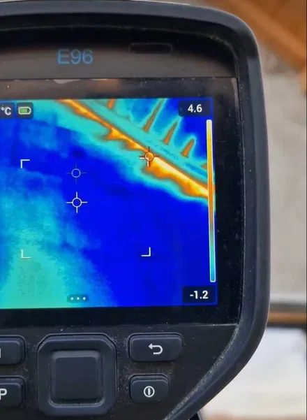

Termografia este o investigație cu cameră în infraroșu, fără spargeri și fără demontări: diferențele de temperatură de pe suprafețe arată ce se întâmplă în spatele finisajului. Depistăm punți termice, izolație lipsă sau umezită, infiltrații de aer și de apă, precum și supraîncălziri în tablourile electrice — util înainte de recepție, la cumpărare sau când facturile la încălzire cresc.

Se face doar în sezonul rece. Termografia de anvelopă are nevoie de o diferență de cel puțin 10–15 °C între interior și exterior, altfel imaginile nu spun nimic. Cel mai bine dimineața devreme, pe vreme fără soare și fără vânt puternic. La instalațiile electrice, în schimb, măsurarea se poate face oricând, sub sarcină.
Pentru acoperișuri, terase și fațade înalte, aceeași investigație se poate face din aer, cu drona, fără schelă. Iar la lucrările aflate încă în execuție, constatările termografice se corelează cu diriginția de șantier, care verifică lucrările în numele beneficiarului.
Inspecția termografică arată unde este problema, nu întotdeauna și cauza exactă. Acolo unde este necesar, o completăm cu verificări suplimentare sau cu recomandarea unei expertize.
Spuneți-ne pe scurt ce aveți de construit sau de verificat — o simplă întrebare nu vă obligă la nimic.
Punți termice la stâlpi, grinzi, buiandrugi și pe conturul tâmplăriei, izolație lipsă, deplasată sau umezită, infiltrații de aer și de apă, trasee de încălzire în pardoseală, precum și supraîncălziri în instalația electrică — conexiuni slăbite, siguranțe și borne supraîncărcate în tablouri.
Termogramele pereche cu fotografii în lumină vizibilă, interpretarea fiecărei imagini — ce se vede și ce înseamnă —, condițiile în care s-a făcut măsurarea (temperaturi, umiditate, oră) și concluzii cu recomandări de remediere, în ordinea priorității.
Termografia de anvelopă se face doar în sezonul rece, când există o diferență de cel puțin 10–15 °C între interior și exterior — cel mai bine dimineața devreme, pe vreme fără soare și fără vânt puternic. La instalațiile electrice, măsurarea se poate face oricând, sub sarcină.
Adresa și tipul construcției, suprafața aproximativă, ce anume vă îngrijorează și de când. La o clădire nouă ne interesează stadiul lucrării și dacă recepția s-a făcut; planurile ajută, dacă le aveți.